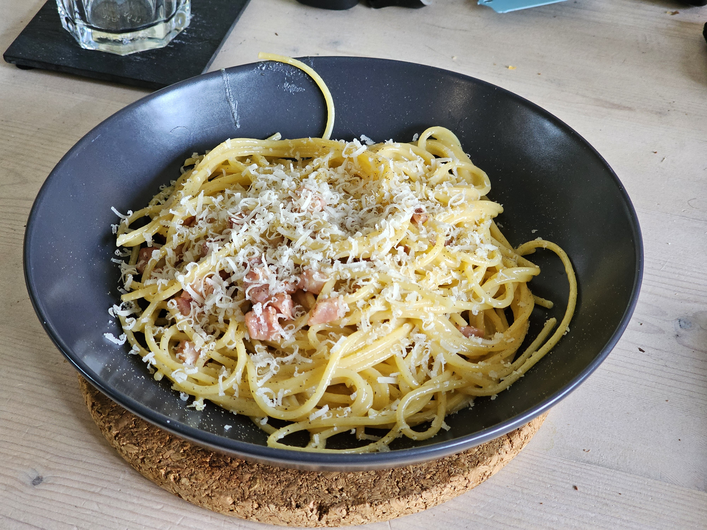

Home
Pasta Carbonara

Yet again a simple dish to learn but hard to master. In this version I've used plain bacon bits because pancetta is very hard to come by over here.
Ingredients
- 200 grams of spaghetti
- 2 medium eggs
- 2 cloves of garlic
- 50+ grams of parmesan
- 150 grams of bacon
Preperation
- Warm up some plates in an oven set to low or use a plate warmer.
- Cook the spaghetti until it's al dente. Usually takes around 9 minutes but can take longer or shorter depending on the pasta you're using so be sure to check after about 8 minutes.
- Heat up some olive oil in a pan and cook the bacon until it starts to get crispy.
- Grate the cheese as fine as possible and whisk the eggs. Now mix 40 grams of cheese with the eggs.
- Once the bacon is crispy and the spaghetti cooked either drain the spaghetti while setting aside a small cup of water and then dump the spaghetti in the pan with bacon, or just transfer the spaghetti straight out of the pot using a pair of thongs or some other utensils.
- Set the heat to (very) low, add the egg and cheese mixture and mix it all up. Keep mixing until it just about stops being runny and starts to turn creamy but don't let the eggs solidify.
- Grab the plates (careful hot hot hot!) and plate the spaghetti. Top it off with some more parmesan to taste.